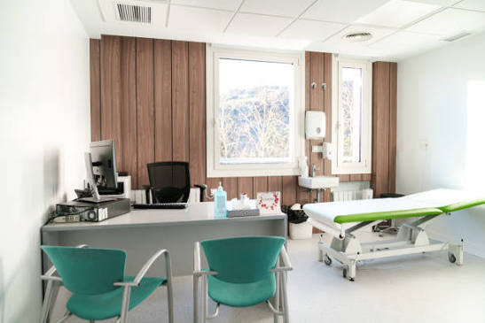

Profil Rumah Sakit
Kenali informasi, visi, misi, dan gambaran umum rumah sakit.
Selengkapnya →Pelayanan Kesehatan Terpadu
Kami berkomitmen memberikan informasi dan pelayanan kesehatan yang profesional, ramah, serta berkualitas untuk masyarakat.
Kenali Rumah SakitTemukan informasi mengenai profil, layanan, dan fasilitas kesehatan kami.
Kenali informasi, visi, misi, dan gambaran umum rumah sakit.
Selengkapnya →Dapatkan informasi mengenai berbagai layanan kesehatan.
Selengkapnya →Pelajari kebiasaan sederhana untuk menjaga kesehatan sehari-hari.
Selengkapnya →Informasi edukatif untuk meningkatkan kesadaran masyarakat tentang kesehatan.

Menjaga kesehatan dapat dimulai melalui kebiasaan sederhana seperti mengonsumsi makanan bergizi, berolahraga secara teratur, dan mendapatkan istirahat yang cukup.
Baca Informasi →Kunjungi halaman lokasi untuk melihat informasi alamat dan kontak.
Lihat Lokasi dan Kontak